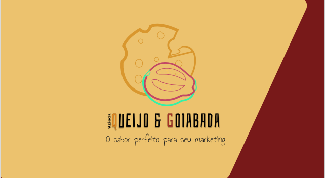
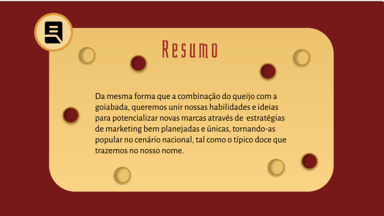
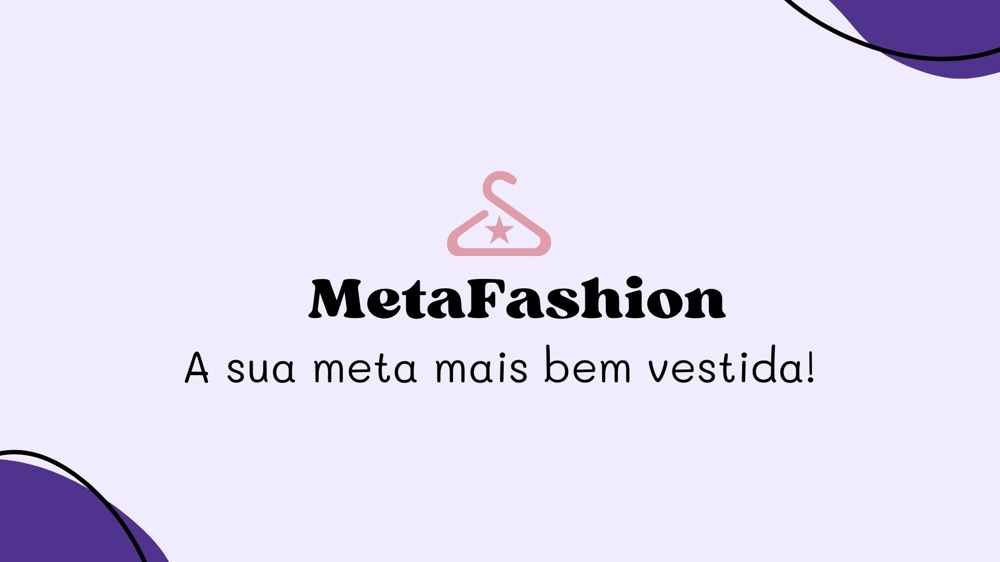
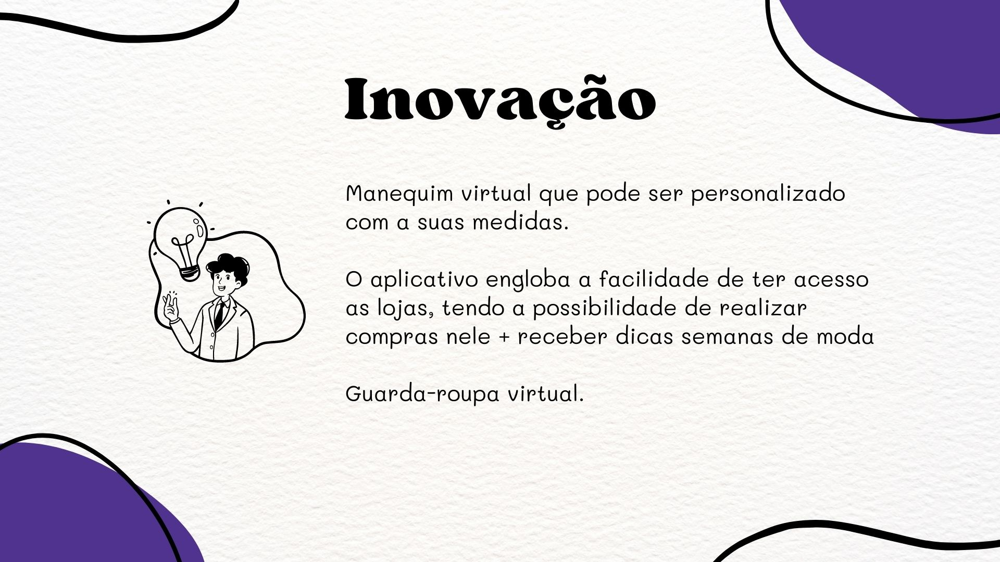

Já realizei diversos projetos durante o percorrer das universidades, separei os mais marcantes para expor neste site
Projeto de Manual de Identidade (MIV)

Este trabalho foi realizado em grupo para a matéria de Comunicação Visual. O objetivo era criar uma agência que envolvesse conceitos de Marketing e Mídias.
Eu e o meu grupo pensamos então em trazer uma agência de marketing com foco em pequenas e médias empresas brasileiras.
Auxiliei no processo de criação do nome e de todo o branding, inclusive o Slogan.

Quer ver a apresentação completa? Aperte no link ;)
Projeto de criação de uma empresa criadora de um software inovador

Para o desenvolvimento deste trabalho de Projeto Integrador, o foco era criar um protótipo de um software que auxiliaria no dia a dia das pessoas.
Eu e meu grupo elaboramos como proposta um aplicativo que teria como objetivo facilitar o processo de escolha de looks (combinação de roupoas), assim como, trazer assertividade nas compras.
Trouxe como ideia para o app teria um provador virtual para os usuários testarem as roupas das marcas fastfashion parceiras do MetaFashion. Além disso, os usuários teriam a possibilidade de escanear as suas roupas, criando então, um guarda-roupa digital.

Quer ver a apresentação completa? Aperte no link ;)
No primeiro semestre da faculdade criamos a noss própria identidade visual, trazendo elementos, cores e fontes que façam sentido conosco.
Pensando nas características que fazem sentido com o meu ser e com o meu trabalho, escolhi a cor Roxa e a cor Rosa para serem utilizadas no meu Personal Brand
Escolhi a cor rosa por causa dos significados de romance, charme, delicadeza e amor.
Roxo, pois traz o siginificado de sinceridade, respeito, mistério, conhecimento, magia e sensibilidade.